Connecting students with part-time jobs, employers, and a community feed.
Group 12
Problem, solution, roles and key features.
Live UI: landing, auth, student, feed, employer, admin.
Architecture, tech stack, security, file service, data model.
Verification, privacy, terms, moderation.
End-to-end walkthrough of the core flow.
Challenges, learnings and roadmap.
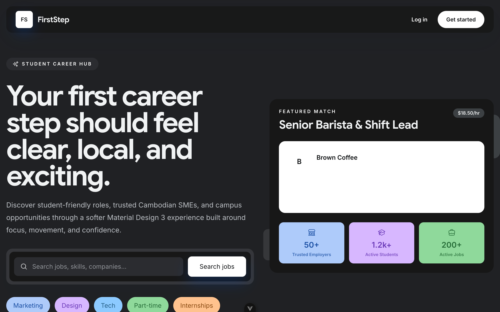
Builds a profile, uploads a CV, discovers jobs, applies, and posts.
Creates a company profile, gets verified, posts jobs, reviews applicants.
Verifies employers, moderates content, and handles disputes.
Role selection happens at registration and drives the onboarding flow.
Password + passkeys (WebAuthn) + OTP email.
University, major, skills, CV, salary.
Profiles reviewed by admins before going live.
Posts, stories, follows, messages.
CVs, logos and media via a Rust microservice.
Admin dashboard for trust & safety.
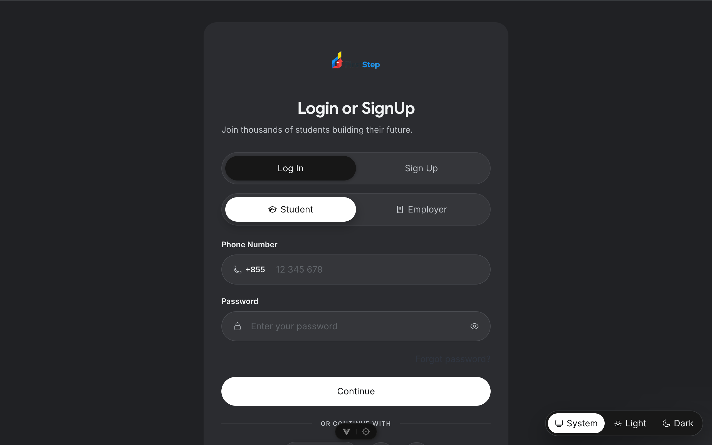
A monorepo: backend, frontend, the Rust
file_service, and shared data_transfer DTOs.
Browser client
Socket.IO gateway
TypeORM
API-key protected
SendGrid · Nodemailer
The Vue app talks to NestJS, which persists to Postgres and delegates files to the Rust service. WebSockets power live updates.
Vue 3 · Vite · Pinia · Vue Router · Vue I18n · Tailwind Typography
NestJS 11 · TypeORM · class-validator · Socket.IO
bcrypt · JWT · SimpleWebAuthn (passkeys) · express-session
Rust · Axum · Tokio
PostgreSQL
Docker · docker-compose · GitHub Container Registry
/onboarding/student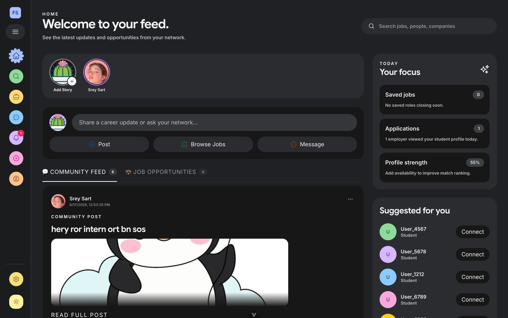
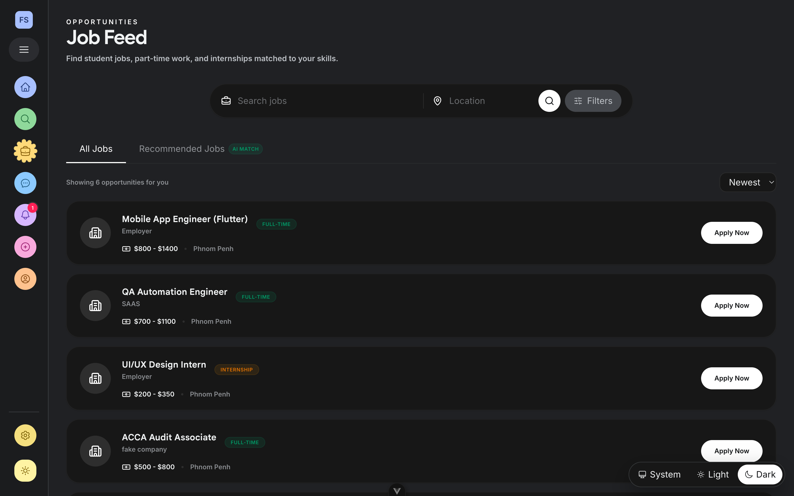
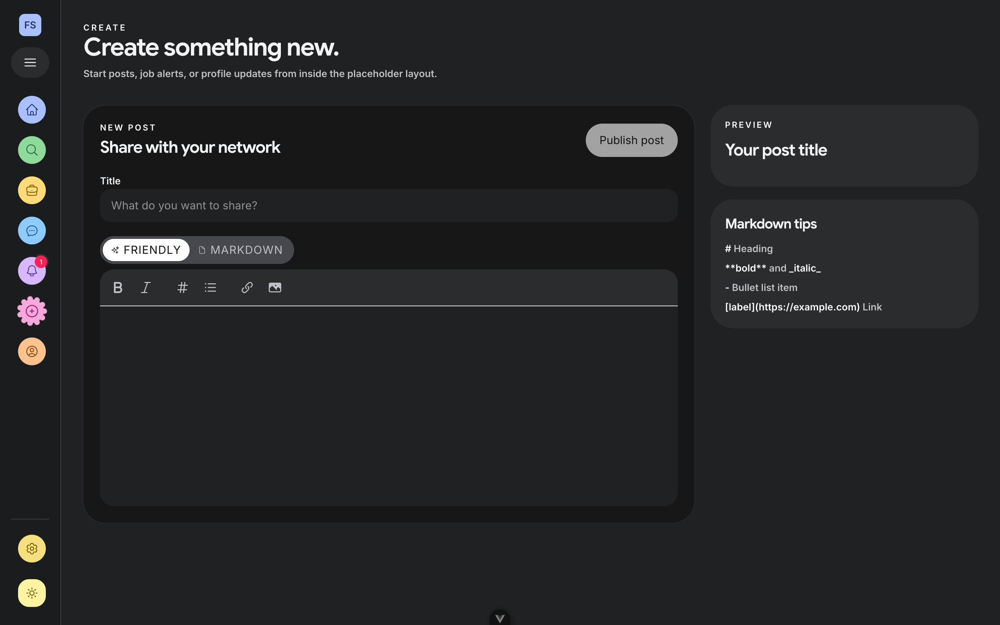
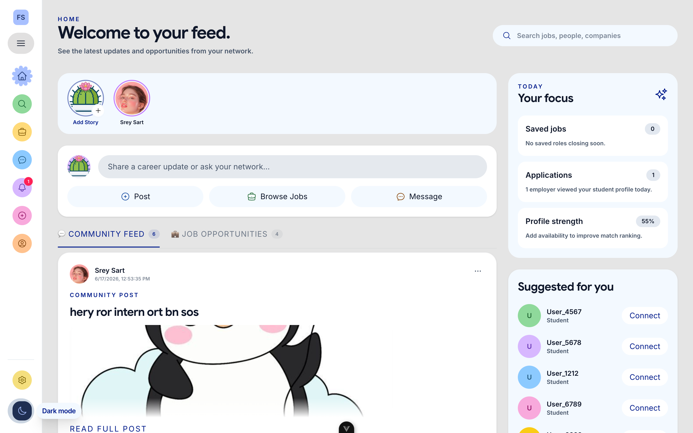
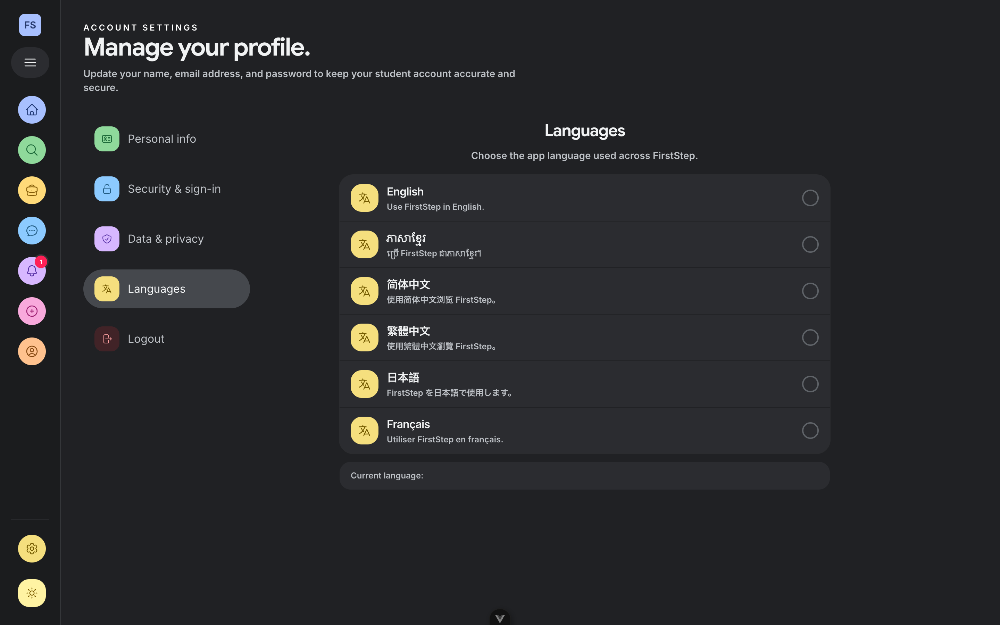
isVerified flag drives a trust badge./admin/moderationGET /admin/employers/pending
PATCH /admin/employers/:id/approve
DELETE /admin/employers/:id/rejectRoadmap: post/job moderation, dispute handling, admin-only guards.
x-api-key / Bearer).Role & account-status enums; student & employer profiles.
Posts (+ likes, comments, shares, bookmarks), Stories.
Follows, Messages, Job applications.
Sessions + passkey credentials.
Shared data_transfer DTOs keep the API
contract consistent across frontend & backend; TypeORM auto-loads entities.
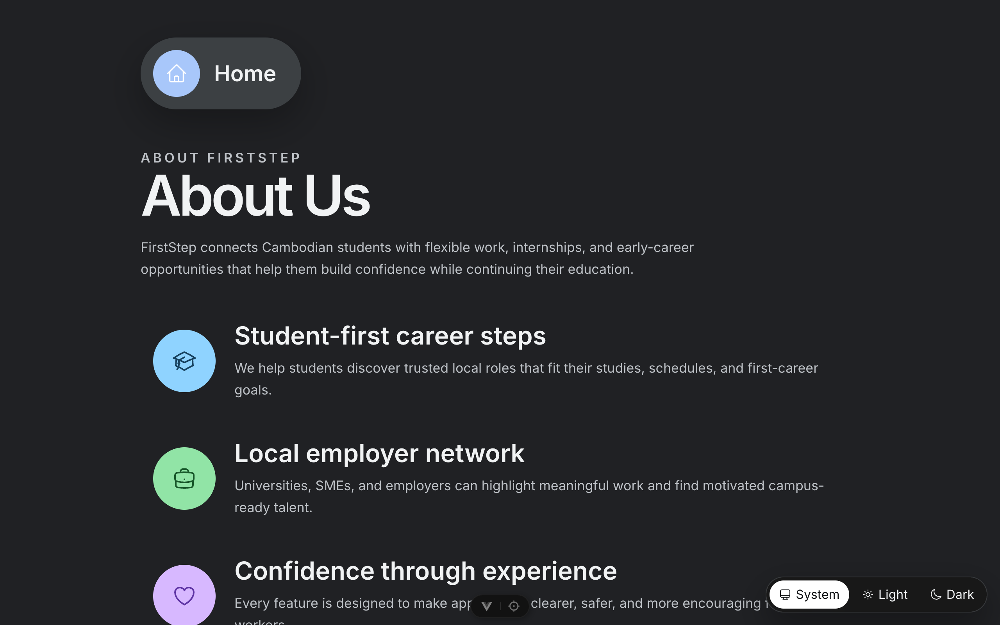
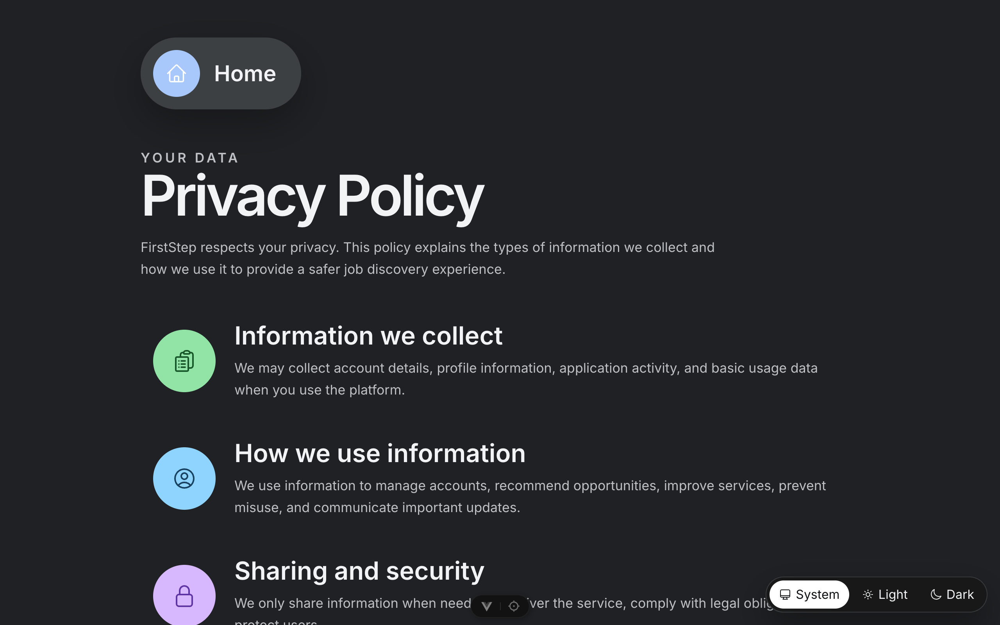
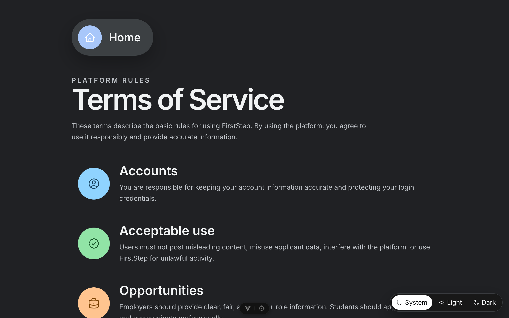
Dedicated Privacy Policy and Terms of Service pages set clear expectations for users.
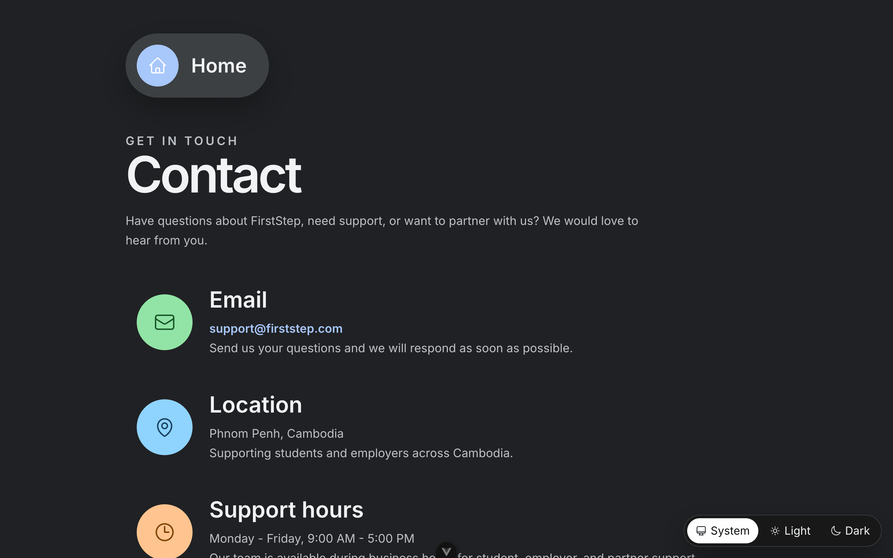
Choose a role → onboarding.
Create & view a post in the feed.
Submit company proof.
Approve the employer.
Optional passwordless login.
The admin-approval moment.
Posting + searchable, paginated jobs.
Submitted → Viewed → Interview → Result.
Likes/comments UI, feed pagination.
Bilingual English / Khmer.
Role guards, secure file storage, tests.
Smart recommendations & skill matching.
FirstStep — turning a free afternoon into experience.
Group 12 · Project II